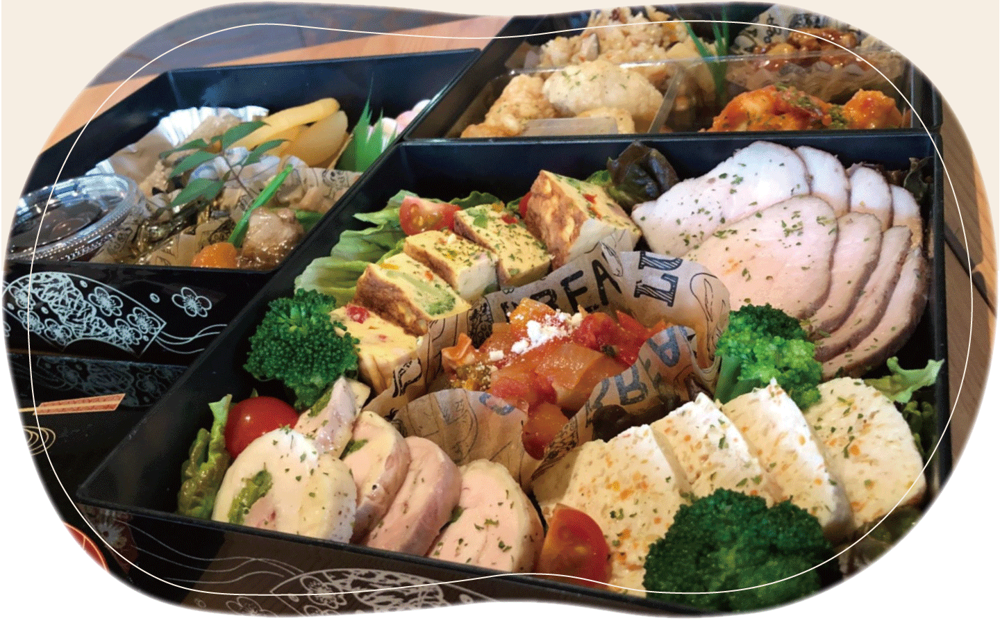
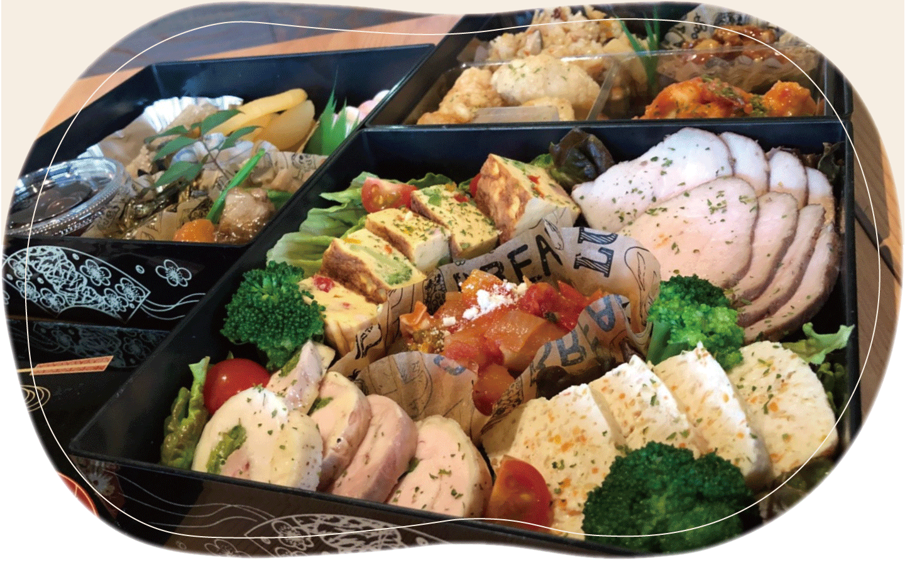

Tel 072-648-3585
Lunch 11:30~14:30(L.O.14:00)
Dinner 18:00~23:00(L.O.22:00)
年中無休
Comodo『コモド』は、大阪府高槻市藤の里の住宅街の中にあるビルの３階を改装した レストランで、落ち着いた雰囲気でゆっくり過ごしていただけます。
まだまだ成長途中なComodoですが、皆様にそう思っていただけるようなお店を 目指していきます。
「食材本来の味を活かし、胃もたれしないあっさりした味付け」をコンセプトに、仕込みから料理の工程ひとつひとつにこだわっています。
ランチはユーリンチー〜ガパオライスなど多国籍の料理を、ディナーは和・洋・中の創作料理など、様々なメニューをご用意しています。
また、メニュー以外のお料理も、可能な限りお応え致します。
ご入園、ご入学されるお子様の最初のドリンクを、4月いっぱいまで無料とさせていただきます。2019.3.31更新
3月3日にお越しいただいた方に、スノーボールをお配りします。2019.2.24更新
塩ぜんざい始めました。2019.1.7更新
 
